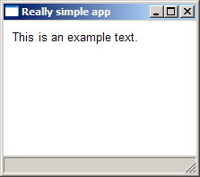

The PyPop GUI framework originated in my wftk open-source workflow toolkit project. Every time I approached something GUI-related, I felt the need to package the definition of GUI projects in a more concise way, and so years passed and I avoided doing anything GUI-based. But in late 2006, I ran across the "Software Jedi", Dana Hanna, who had undertaken the crazy project of developing an application, albeit a small one, every day for a month. He blogged the experience at Anappaday.com, and gained some notoriety. And he had a forum where people could suggest or request additional little apps of that nature. Well -- long story short, his month basically burned him out, and he was looking for somebody else to take up the task, but perhaps with a somewhat longer timeframe. I agreed to do it -- at Anappaweek.com.
It didn't take long -- app #2, in fact -- before the urge to rejuvenate my GUI framework was overpowering. I developed app #2, the filetagger, based on the WxPyWf framework, which is a Python wrapper for both wxWidgets and wftk. And I used the MacMillan installer to package it for distribution. But it was really big, even for a very small app, because wxWidgets is itself rather large. So it occurred to me that if I wanted to install multiple such apps on a single machine, the overhead would be offensive. To me, anyway.
And so my generic idea for a general-purpose wrapper for the WxPyWf, PyPop, was the natural next step. The WxPyWf organizes most of the application-specific code into command-line interfaces, and so I figured I could just import such an interface definition in Python as an auxiliary file, and distribute apps as small groups of text files, to be run by a single PyPop instance. The epiphany came when I realized that given Python's magic powers, I could generate the Python code for a command-line interface class and interpret it on the fly. Python is cool that way. And so that's just what I did; PyPop can define an entire (small) application in a single XML file, including the definition of the UI, all actions taken by the UI, command-line specifications, and a specification of the data structure saved and loaded by the app.
So a PyPop application consists of a single XML file, saved with the extension ".wftk" by default. (The PyPop installer registers that so you
can double-click the app and it will run automagically.) You can also store apps into the PyPop installation directory, in the apps
folder. If you do that, you can run PyPop with the app name on the command line (but without the extension) and it will run the appropriate app.
The simplest possible PyPop app is probably this:
(unresolved tag quote example1.wftk)
When run, it simply looks like this: